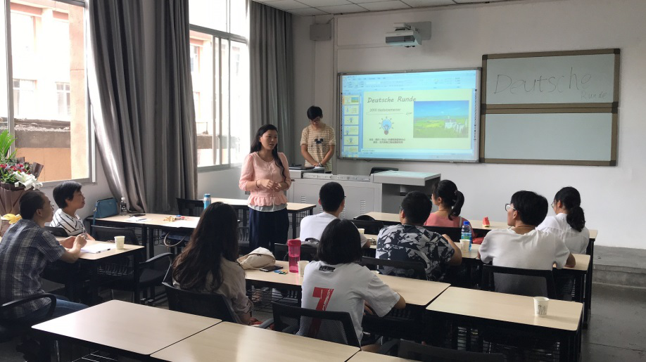
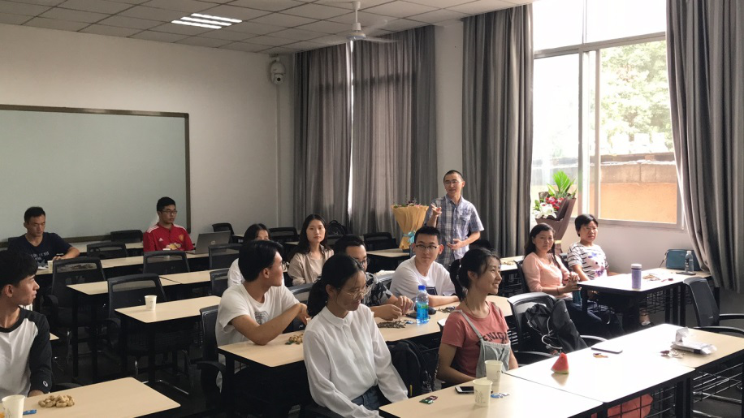
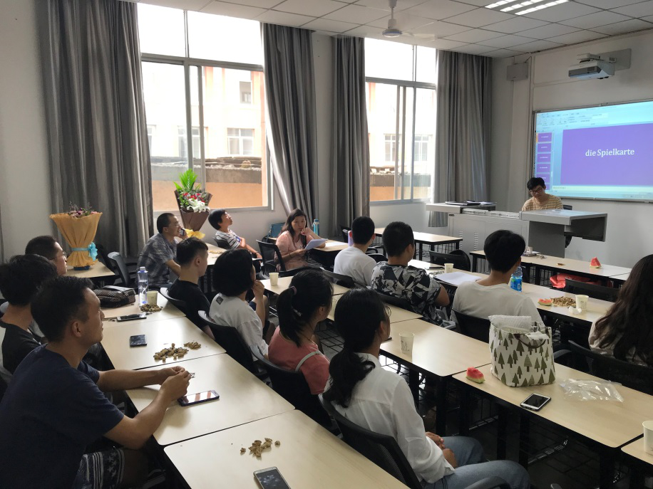
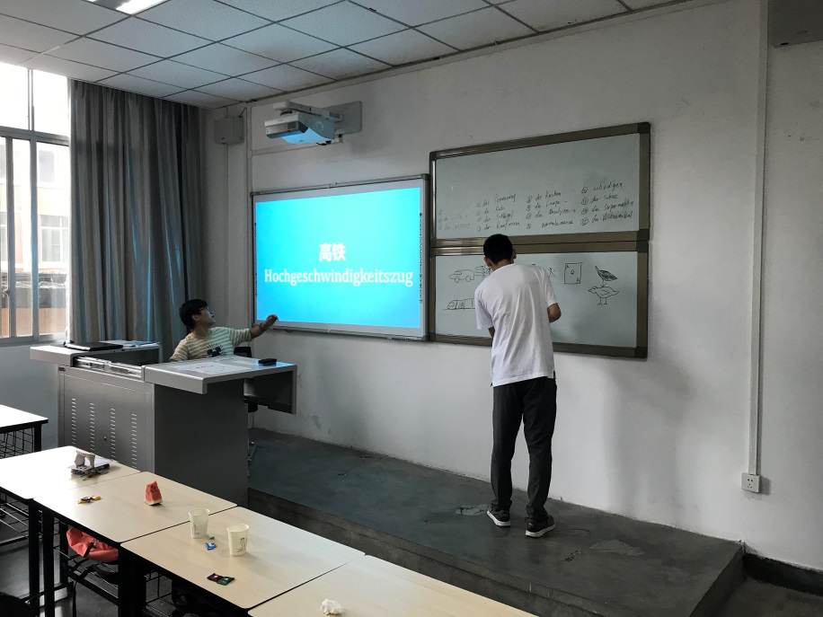
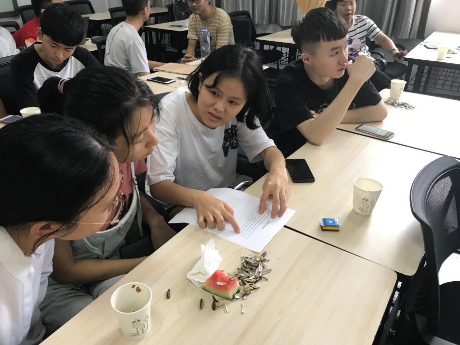

作者：赵杨
时间：2018-09-11 14:46:05 | 来源：本站
2018年9月6日下午，四川（乐山）中德科技促进中心交大工作组在校区内顺利开展新学期第一期德语角活动。
此次德语角活动邀请到唐阳副教授、方草老师、余芳老师作为嘉宾和活动评委。 参加本次活动的同学主要是校区B1班学员、A1班学员及刚入校想要学习德语的大一新生。
活动开始之前，方草老师向大家致辞。方草老师提到德国的工业实力很强，同学们如果以后有机会去德国留学， 会学到更多的东西，终生受用。留学的基础是德语的学习，在德语的学习中也会遇到很多的困难， 需要同学们花更多的时间和精力来把德语学好。希望同学们在德语角能多多交流，玩的愉快。
唐阳副教授也做了即兴发言。首先，唐阳副教授表示很开心看到同学们齐聚德语角用德语交流。 他提到在现在中美贸易摩擦的环境下，中德两国都有加强合作的强烈愿望，这对以后想赴德留学 的同学们来说是利好消息。之后，唐阳副教授深情回顾了峨眉校区与德国Ostfalia大学八年的 合作历史，鼓励同学们好好学好德语，并承诺今后在校区将继续为同学们学习德语、出国留学深造、 出国游学创造条件，以便将更多的优秀的交大学子送往更高的平台去施展自身才华。
随后，由德语老师闫刚作为主持，将参加活动的同学们分为三组，开展德语小竞赛。
第一个活动是德语单词拼读，邀请A1班同学上台进行拼读，由方草老师担任评委，并对同学们拼错的词语进行正音。
第二个活动是“你画我猜”，由一位同学在黑板上作画，其他同学根据图形猜出德语单词并进行抢答。
第三个活动是“德语名段”口译。每个小组各分到两段德语小文章，由各组同学共同努力， 将德语文章翻译成中文，并与其它组的同学进行分享。
最后由德语老师闫刚向大家分享了战后德国如何重建和发展的故事， 以及现在德国高收入职业的榜单（其中工程师排名高居第四，仅次于在化工、医药及航空航天）。

此次活动持续了三个小时，在活动过程中，不同德语水平的同学在一起相互交流学习，共同提高。 四川（乐山）中德科技促进中心交大工作组还将持续在校区开展德语角活动，为同学们利用德语交流创造更多机会。
在9月20日，四川（乐山）中德科技促进中心交大工作组组织将邀请唐阳副教授为 全校师生讲述他赴德留学的相关经历，将本次秋季迎新工作推向高潮！